Connect your App
IoT: Basic Bluetooth Connection Setup
IoT Base Connect
If you are already starting with IoT_BaseConnect, you may skip this section.
If you would prefer to skip this, you can download IoT_BaseConnect.aia directly.
Otherwise, continue to configure your app to find and connect to a Bluetooth LE device.
Set up Screen1
First, we need to set up some buttons to find and connect to our Arduino over Bluetooth.
- Drag a HorizontalArrangement from the Layout drawer in the Palette and add 4 Buttons to it.
- Rename the buttons: ButtonScan, ButtonStopScan, ButtonConnect, and ButtonDisconnect.
- Change their text to "Scan", "Stop Scan", "Connect", and Disconnect".
- Below the Horizontal Arrangement add a Label. Rename it LabelStatus and change its text to "Status: ".
- Drag in a ListView below LabelStatus and rename it ListBLE.
Set up Bluetooth
Next, we need to install the BluetoothLE extension.
- Download the edu.mit.appinventor.ble.aix extension to your computer.
- In the Palette, click on Extension at the bottom and then on "Import extension" and then "Choose File".
- Find the extension on your computer and upload it.
Set up Bluetooth
Add the BluetoothLE extension by dragging it onto the Viewer.
After it is are dragged onto the Viewer it will appear below the main screen, since it is a non-visible component.
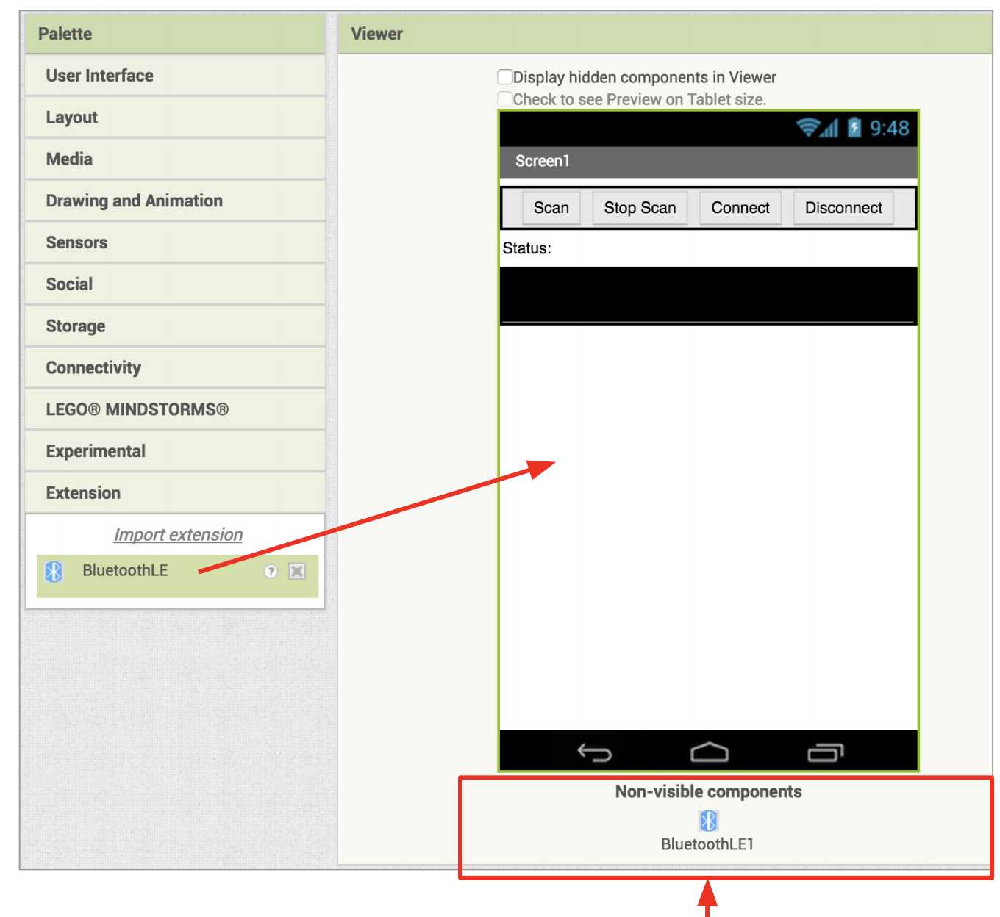Programming the blocks
Switch to the block editor.
We want to set up the app to scan for available Bluetooth devices. To do this, we will use the ButtonScan button to set the Bluetooth component to start scanning, and change the status label.
From the Blocks pane, click on ButtonScan, and drag out when ButtonScan.Click.
- From the BluetoothLE1 drawer, add call BluetoothLE1.StartScanning.
- From the LabelStatus drawer, add set LabelStatus.Text to.
- From the Text drawer, add a text block and type in "Status: Scanning".
- From the ListBLE drawer, add set ListBLE.Visible.
- From the Logic drawer, drag out a true block and snap to set ListBLE.Visible.
Note: We do this so we can hide the list later, because it can get very long if there are a lot of Bluetooth devices nearby.
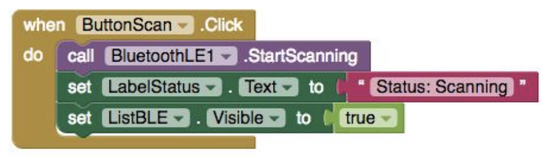Programming the blocks
Next, we'll have the app stop scanning and change the status label when we press ButtonStopScan.
From the Blocks pane click on ButtonStopScan, and drag out when ButtonStopScan.Click.
- From the BluetoothLE1 drawer, add call BluetoothLE1.StopScanning.
- From the LabelStatus drawer, add set LabelStatus.Text to.
- From the Text drawer, add a text block and type in "Status: Stopped Scanning".
Programming the blocks
We need to populate the device list with all the available Bluetooth devices.
From the Blocks pane, click on BluetoothLE1, and drag out when BluetoothLE1.DeviceFound.
From the ListBLE drawer, add set ListBLE.ElementsFromString to.
From the BluetoothLE1 drawer, add BluetoothLE1.Devicelist.
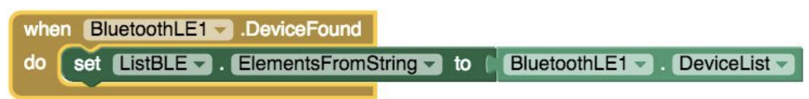Programming the blocks
Now, we’ll use the app to connect to the Arduino over Bluetooth.
From the Blocks pane, click on ButtonConnect, and drag out when ButtonConnect.Click.
- From the BluetoothLE1 drawer, add call BluetoothLE1.Connect index.
- From the ListBLE drawer, add ListBLE.SelectionIndex.
- From the LabelStatus drawer, add set LabelStatus.Text to.
- From the Text drawer, add a text block and type in "Status: Stopped Scanning".
Programming the blocks
Let's set it up so we know when the app has successfully connected to the Arduino:
From the Blocks pane, click on BlutoothLE1, and drag out when BluetoothLE1.Connected.
- From the LabelStatus drawer, add set LabelStatus.Text to.
- From the Text drawer, add a text block and type in "Status: Stopped Scanning".
- From the ListBLE drawer, add set ListBLE.Visible.
- From the Logic drawer, drag out a false block and snap to set ListBLE.Visible.
Note: We do this to hide the list. As we mentioned above, it can get very long if there are a lot of Bluetooth devices nearby.
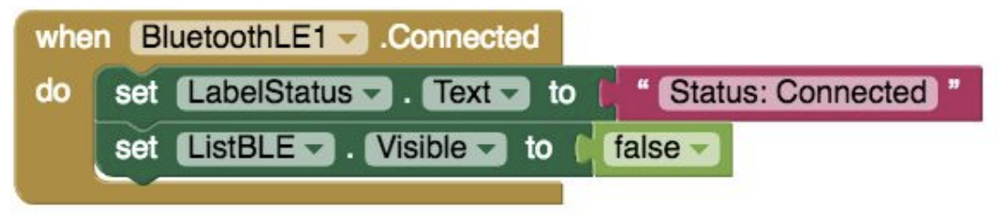Programming the blocks
Next we want to be able to disconnect from the Bluetooth device.
From the Blocks pane, click on ButtonDisconnect, and drag out when ButtonDisconnect.Click.
From the BluetoothLE1 drawer, add call BluetoothLE1.Disconnect.
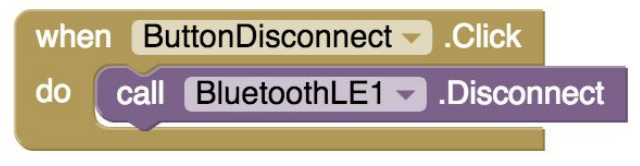Programming the blocks
We also want to know when the Bluetooth device successfully disconnects (to know pressing the button above worked).
From the Blocks pane, click on BlutoothLE1, and drag out when BluetoothLE1.Disconnected.
From the LabelStatus drawer, add set LabelStatus.Text to.
From the Text drawer, add a text block and type in "Status: Disconnected".
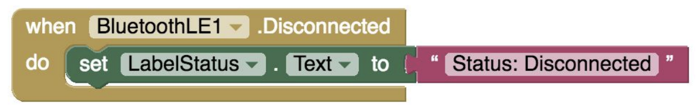Testing
Now let's test out our app using the MIT AI2 Companion. Once you've connected your device to your computer, test the app using the following steps:
- Click the Scan button. You should see a list of BLE devices.
- When you see your device, click Stop Scan.
- Click on your device name in the list.
- Click Connect. If you device successfully connects your LabelStatus should change to "Status: Connected".
Note: This tutorial only connects your app to your IoT Bluetooth device. To do something fun with the device, you will want to set it up and then try adding sensors (light, moisture, etc) to control and/or display information.
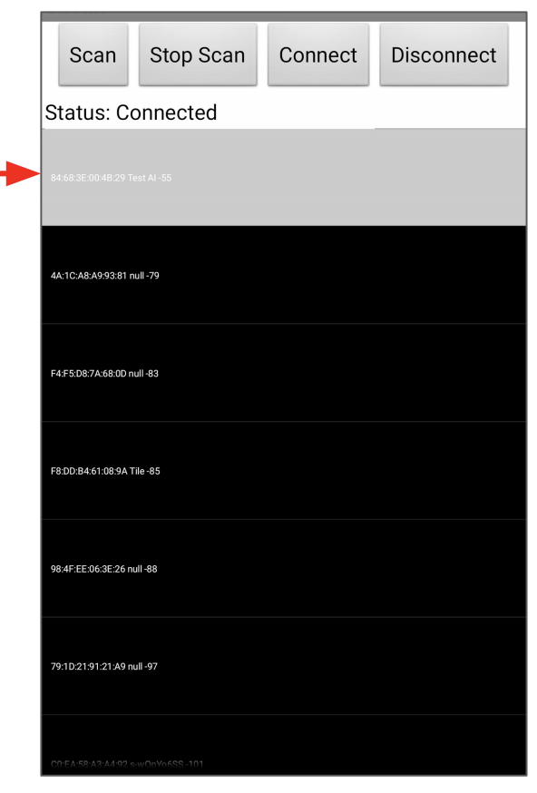IoT: Set Up Your Arduino
Introduction
In order to make the Arduino 101 to work with App Inventor + IoT we need to do a bit of setup. Most of this you will only need to do once.
If you have already completed this setup, you may skip this section.
Setting Up Your Arduino
If you haven't already, install the Arduino Integrated Development Environment (IDE) (Link)
Now open up the IDE and open the AIM-for-Things-Arduino101.ino file (the Arduino file for App Inventor), which you can download here.
Note: If another file is open (often named "sketch_today's date" you can close it once you open the AIM-for-Things-Arduino101 file.)
You should see a screen that looks very similar to the picture below:
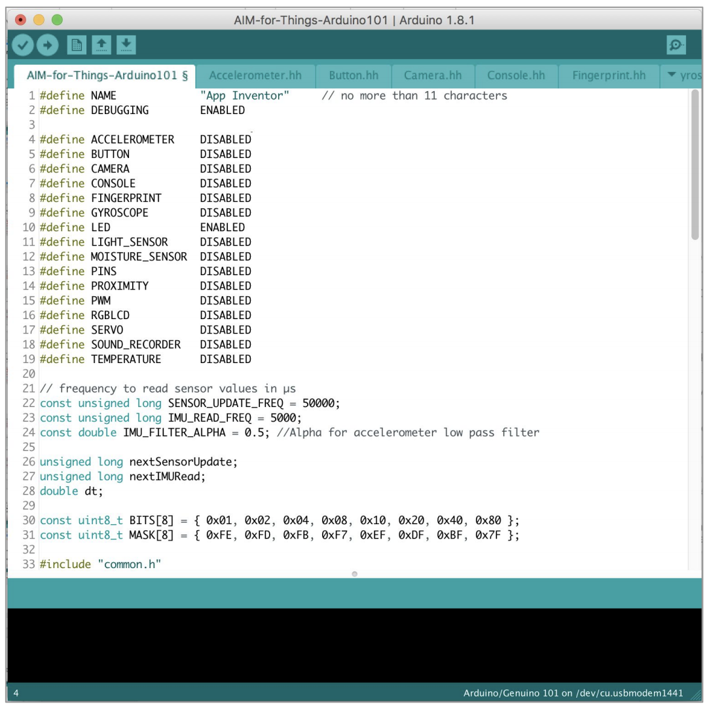Installing Sensors
Now we're going to install some libraries that are necessary to run Arduino with App Inventor.
Note: While you might not need these libraries for every project they are a good baseline.
Click on the Sketch dropdown menu, hover over Include Library, and then select Manage Libraries.
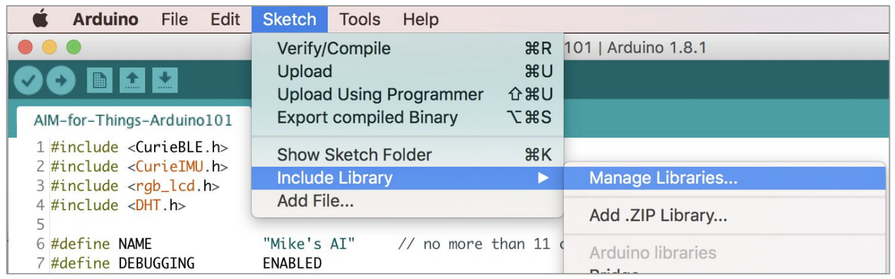In Filter your search... type "DHT-sensor-library" and click Install.
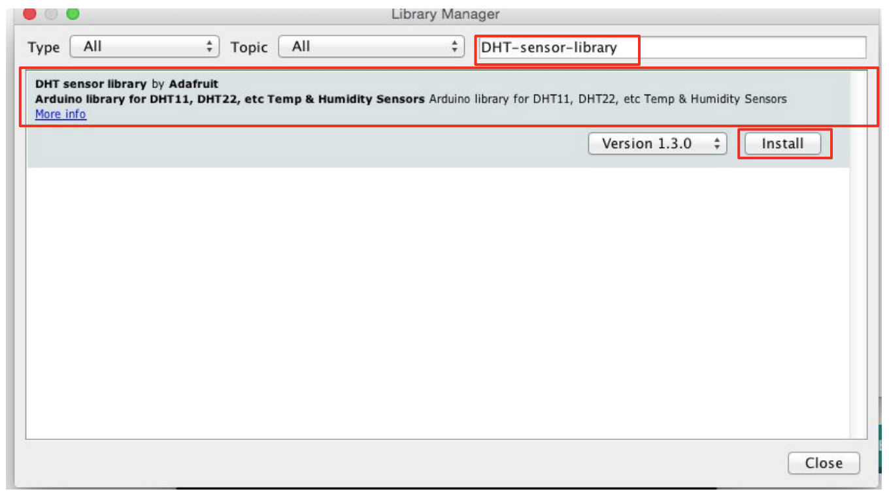Now, let's do the same for “Adafruit Unified Sensor” (you might need to scroll down to find the right one)
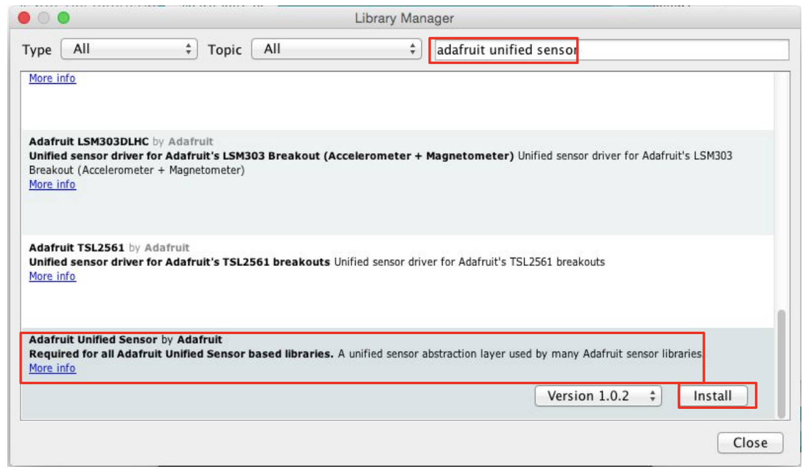Set up RGB LCD Backlight
Getting the Grove LCD RGB Backlight working is a bit different.
- First you need to download the library file here to your computer.
- In the Arduino IDE menu, click on Sketch > Include Library > Add .ZIP Library.
- Find the file on your computer and upload it.
To confirm the library was successfully installed click back to manage libraries: Sketch > Include Library > Manage Libraries.
In the search bar type in "Grove LCD". You should see "Grove_LCD_RGB_Backlight-master" as Installed.
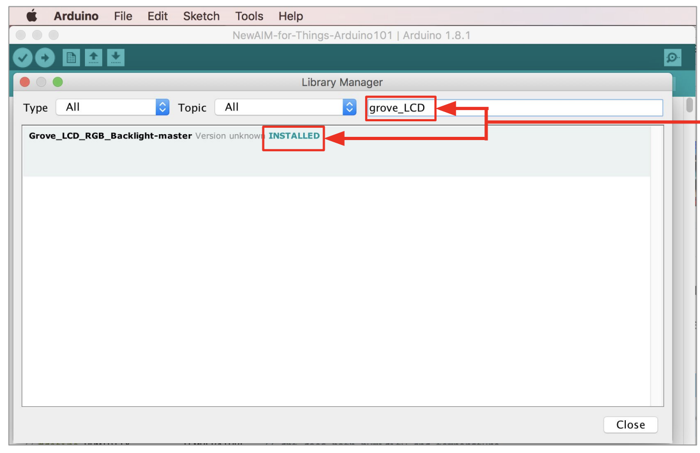Connect the Arduino
Now, if you haven't already, you should now plug in your Arduino to your computer.
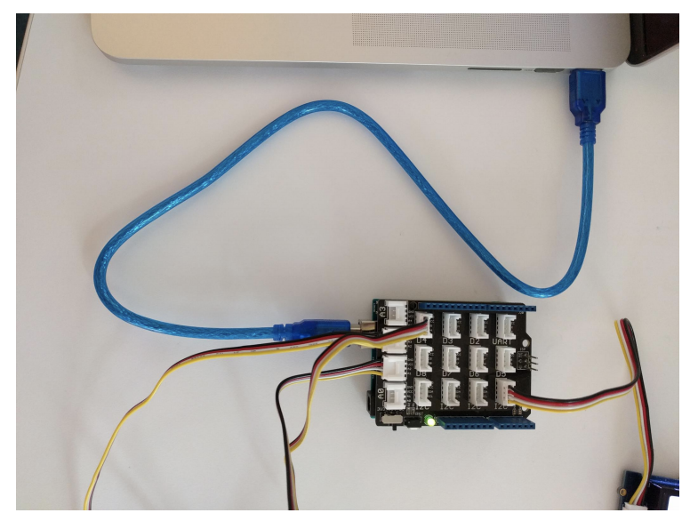Next, you need to select the correct Arduino board (Arduino/Genuino 101).
Under the Tools menu go to the Board sub-menu. At the bottom if you see "Arduino/Genuino 101" then select it. If not, follow the steps below.
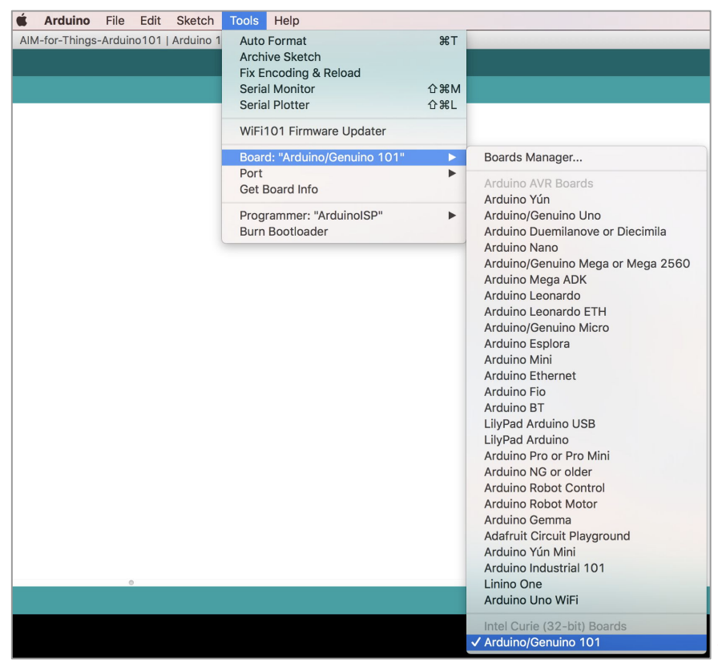If you don't see the Arduino/Genuino 101, select Board Manager from the same sub-menu mentioned above.
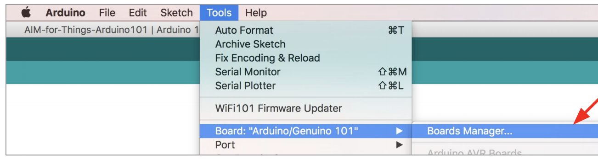In the search bar, type "101" and then select the "Intel Curie Board by Intel".
Click on the "Select version" dropdown, and select 1.0.7. Note: DO NOT use later versions of the firmware.
Click on "Install".
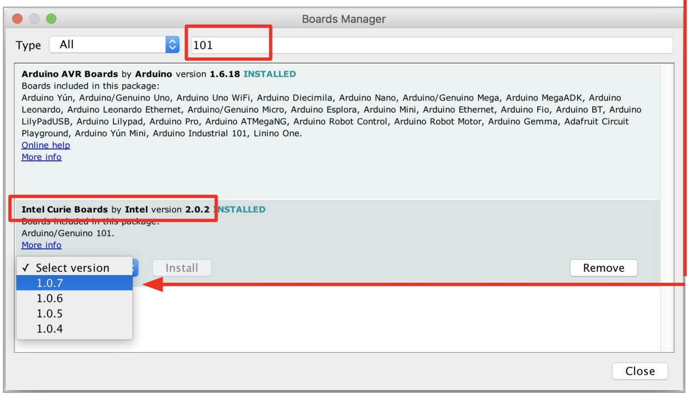Connect the Arduino
Next we need to select the port that the Arduino IDE (programming environment) will use to talk to the Arduino.
- First, make sure the Arduino is plugged into your computer.
- Under the Tools menu, select the "Port" sub-menu
- For Macs, under the "Port" sub-menu, you should see an option that starts with "/dev/cu.usbmodem..."
- For PC computers, you should see an option that starts with COMX (Arduino/Genuino 101) with X being some number from 1-8.
- Select this option. Note: It sometimes takes a minute after you plug in your Arduino for the Port to show up under the submenu.
Sending the program to the board
To run the Arduino program we need to send it to the board. To do this, click on the arrow button in the top left corner of the program window.
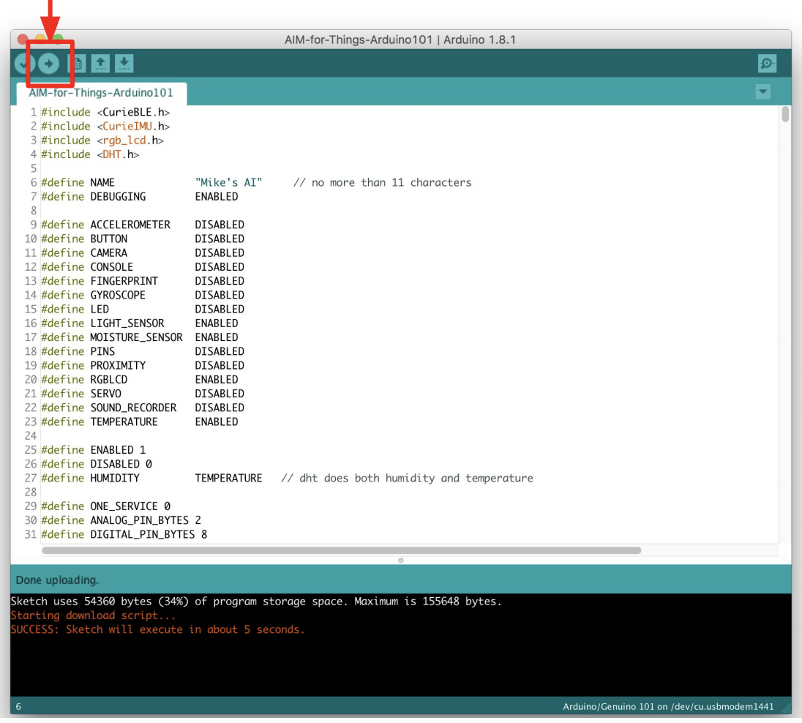Once you have sent the code to the Arduino board, your App Inventor app can interact with the Arduino. Follow any of the How To’s to make an app to control sensors on your board.
IoT: Accelerometer
Introduction
This tutorial will help you get started with App Inventor + IoT and the built-in accelerometer on the Arduino 101 controller. Accelerometers measure acceleration, which is the rate of change of the velocity of an object (the Arduino). Before you start you should first complete the IoT Basic Bluetooth Connection Setup and IoT Setup tutorials to set up your Arduino device.
Download the Arduino 101 Extension Bundle and upload it as an extension in your project.
- In the Palette, click on Extension at the bottom and then on "Import extension" and then "Choose File".
- Find the extension on your computer and upload it.
Setup
Open AIM-For-Thing-Arduino101.ino in the Arduino IDE.
For this tutorial make sure ACCELEROMETER is set to ENABLED and all others are set to DISABLED.
Make sure you have your Arduino board connected to your computer.
Click the arrow button in the top left to upload the code.
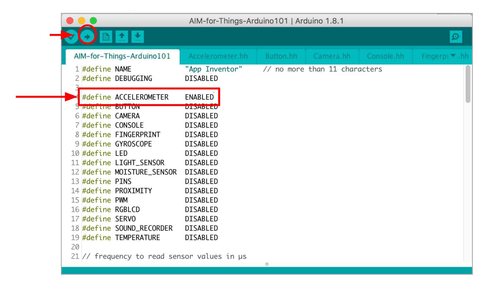Changing Screen1
The remaining steps all build off of the the starter code for Basic Connection tutorial and .aia.
Drag a Label from the User Interface Palette and drop it between LabelStatus and ListBLE
Rename the Label "LabelData".
Change its text to "Data: ".
Add the Arduino101Accelerometer extension to your app by dragging it onto the Viewer.
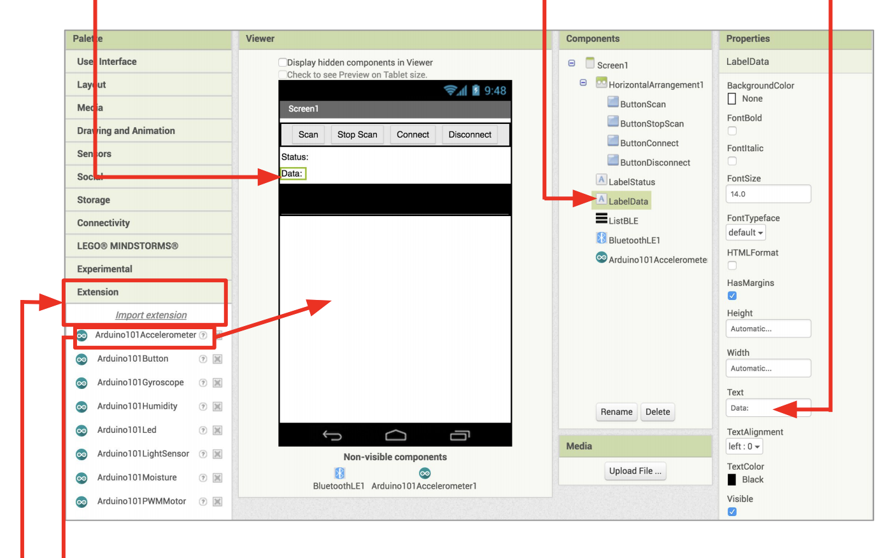Accelerometer functionality
Next, we need to let App Inventor know which BLE device is reading the accelerometer data.
Click on Ardunio101Accelerometer1 in the Components pane.
In the Properties pane, click on BluetoothDevice and select BluetoothLE1.
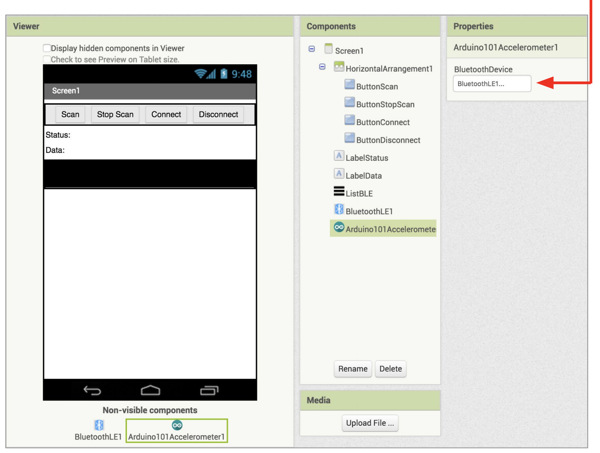Programming the Accelerometer
First, we want to request data updates when the accelerometer sensor values on the Arduino change.
From Arduino101Accelerometer1 in the Blocks pane, add call Arduino101Accelerometer1.RequestAccelerometerDataUpdates to the existing when BluetoothLE1.Connected block from the Basic Connection tutorial.
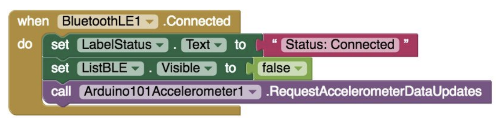Next, we need to store the data we receive from the accelerometer. From the Variables drawer in the Blocks pane, drag an initialize global name to block and name it "Accel_X". From the Math drawer add a number block and set it to "0". We'll use this to keep track of the X-Axis value.
Do this again, and rename the second variable "Accel_Y".
Repeat a third time, and rename the third variable "Accel_Z".
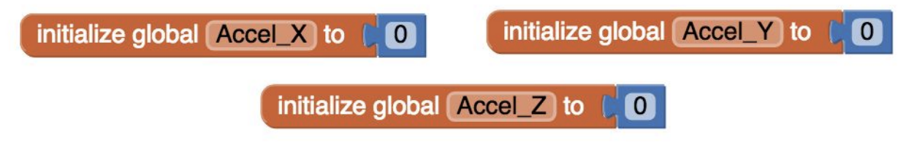Programming the Accelerometer
Let's make a new procedure to display the current readings in the LabelData when we get new data. You can create a procedure by dragging out a purple procedure block from the Procedures drawer in the Blocks pane. Let's rename it updateDataLabel.
- From LabelData in the Blocks pane, add set LabelData.Text to.
- From the Text drawer connect a join block.
- From the Text drawer, connect a text block and type "Reading: ".
- From the Text drawer, connect a text block and type "X ". (note the extra space after the X)
- We need 4 more slots in our join block. To do this, hover over the gear on the join block. In the popup, attach four of the string blocks the the two already there.
- From the Variables drawer, connect a get global Accel_X block.
- From the Text drawer, connect a text block and type "Y ". (note the extra space after the Y)
- From the Variables drawer, connect a get global Accel_Y block.
- From the Text drawer, connect a text block and type "Z ". (note the extra space after the Z)
- From the Variables drawer, connect a get global Accel_Z block. 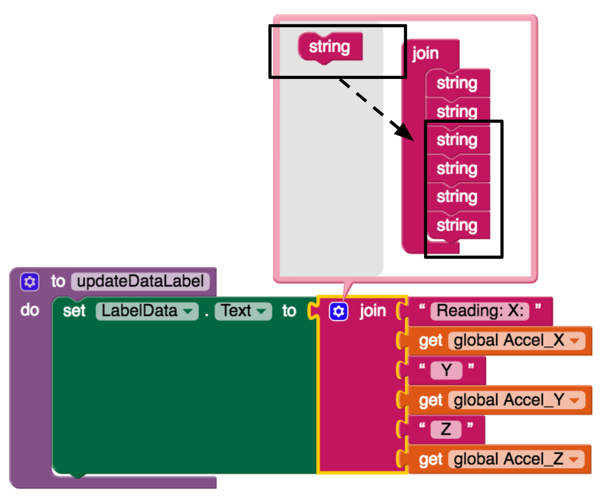
Programming the Accelerometer
Finally, we need to call the procedure when this data is received.
- From the Arduino101Accelerometer1 drawer in the Blocks pane, drag when Ardunio101Accelerometer1.AccelerometerDataReceived.
- From the Variables drawer, add set global Accel_X to.
- Hover over the orange "Accelerometer_X" in when Arduino101Accelerometer1.AccelerometerDataReceived to see the get Accelerometer_X block. Drag the get Accelerometer_X block from this window and snap to set global Accel_X.
- Do the same for Accel_Y and Accel_Z.
- From the Procedures drawer, add call updateDataLabel. 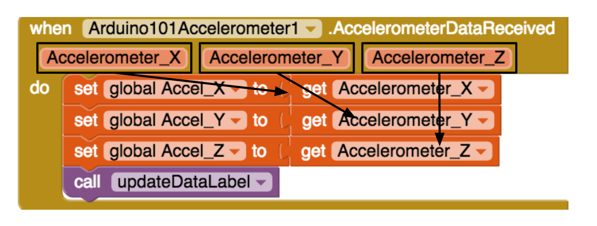
Testing
Your app should now be working! Connect your Android device using the MIT AI2 Companion (if you haven't already). Test it out by moving the Arduino around in the air. If it is working, you should see the data labels change.
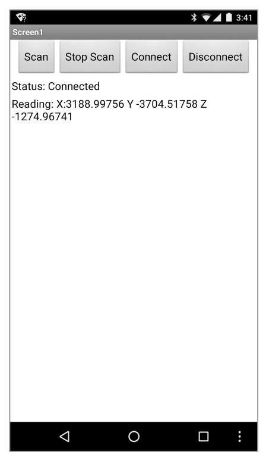IoT: Button
Introduction
This tutorial will help you get started with App Inventor + IoT and a button on an Arduino 101 controller. We are also using a Seeed Grove shield for this tutorial. You do not need to use this board, but it does make things easier. The button we recommend is the Grove button sensor.
Before you start you should have first completed the App Inventor + IoT Setup tutorial to set up your Arduino device.
Download the Arduino 101 Extension Bundle and upload it as an extension in your project.
- In the Palette, click on Extension at the bottom and then on "Import extension" and then "Choose File".
- Find the extension on your computer and upload it.
Setup
Connect the button to the Grove board in the D4 pin connector.
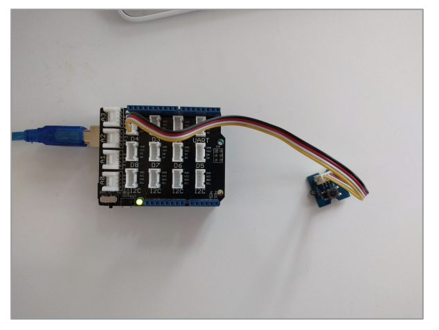Open AIM-For-Thing-Arduino101.ino in the Arduino IDE.
For this tutorial make sure BUTTON is set to ENABLED and all others are set to DISABLED.
Make sure you have your Arduino board connected to your computer.
Click the arrow button in the top left to upload the code.
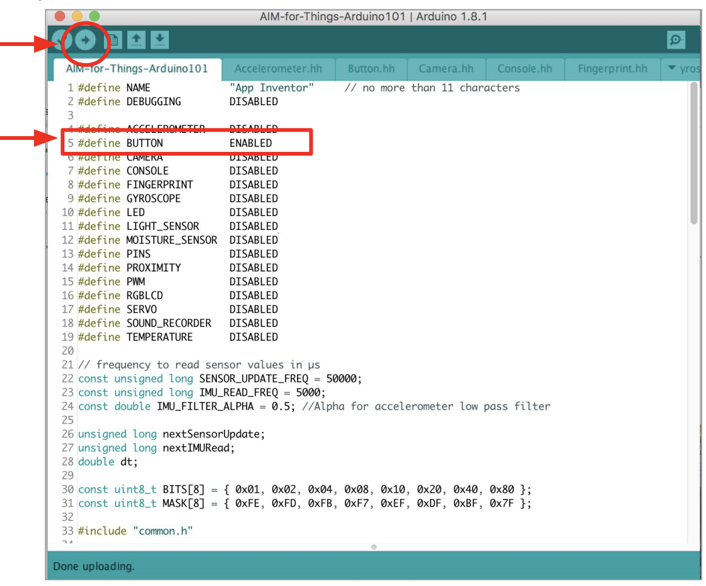Changing Screen1
The remaining steps all build off of the the starter code for Basic Connection tutorial and .aia.
Drag a Label from the User Interface Palette and drop it between LabelStatus and ListBLE
Rename the Label "LabelData".
Change its text to "Data: ".
Add the Arduino101Button extension to your app by dragging it onto the Viewer.

Button functionality
Next, we need to let App Inventor know which pin on the Grove board the button is connected to.
Click on Ardunio101Button1 in the Components pane.
In the Properties pane, click on BluetoothDevice and select BluetoothLE1.
Under Pin, enter the digital pin that matches the one the button is plugged into on the Grove board (in this case D4).
Note: You only need to set the number (4) not the letter (D).
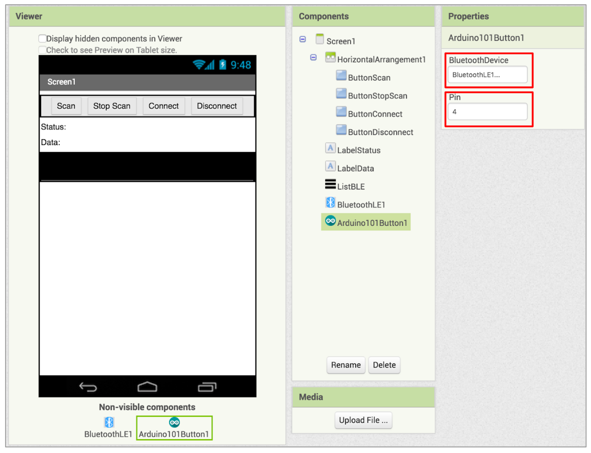Programming the Button
First, we want to request data updates when the sensor value on the Arduino changes.
From Arduino101Button1 in the Blocks pane, add call Arduino101Button1.RequestButtonStateUpdates to the existing when BluetoothLE1.Connected block from the Basic Connection tutorial.
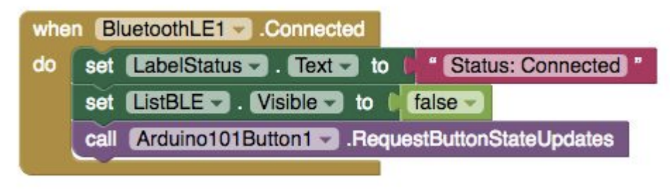Next, we need to store the data we receive from the sensor. From the Variables drawer in the Blocks pane, drag an initialize global name to block and name it "buttonPresses". From the Math drawer add a number block and set it to "0". We'll use this to keep track of the number of times the button is pressed.
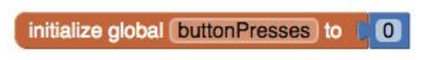Programming the Button
Let's make a new procedure to display the number of times the button is pressed in LabelData when we get new data. You can create a procedure by dragging out a purple procedure block from the Procedures drawer in the Blocks pane. Let's rename it updateDataLabel.
- From LabelData in the Blocks pane, add set LabelData.Text to.
- From the Text drawer connect a join block.
- From the Text drawer, connect a text block and type "Button Presses: ".
- From the Variables drawer, connect a get global buttonPresses block. 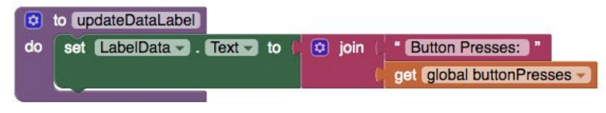
Programming the Button
The Button has two states that we can code for: When the Button is Pressed and when the Button is Released. This means that you can have some things happen each time the button is pressed or held down, and some things happen each time the button is released. Let's see how each of these work. First, let's program the behavior for when the button is pressed down. From Arduino101Button1 in the Blocks pane drag in the when Ardunio101Button1.Pressed block.
- From Screen1 in the Blocks pane, add in set Screen1.BackgroundColor to.
- And from Color drawer in the Blocks pane, connect a Cyan block.
- From the Variables drawer, add set global ButtonPress to.
- Then from the Math drawer connect a + block.
- Next, from the Variables drawer add get globalButtonPress to the Addition block.
- From the Math drawer, add a 0 and change it to 1.
- Finally, from the Procedures drawer add call updateDataLabel. 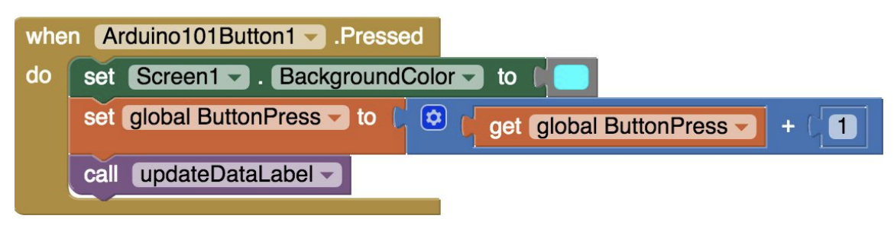
Programming the Button
Now let's code for when the button is released. From the Arduino101Button1 drawer in the Blocks pane, drag in the when Ardunio101Button1.Released block.
From Screen1 in the Blocks pane, add in set Screen1.BackgroundColor to.
And from the Color drawer, connect a White block.
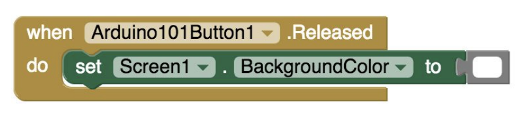Testing
Your app should now be working! Connect your Android device using the MIT AI2 Companion (if you haven't already). Test it out by pressing and releasing the button. You should see the counter go up each time and the screen's background turn Cyan. When you release the button the screen should turn back to White.
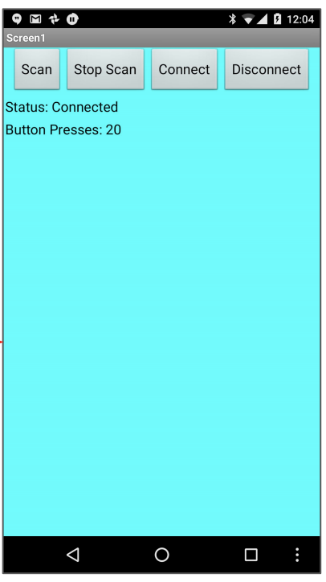IoT: Humidity Sensor
Introduction
This tutorial will help you get started with App Inventor + IoT and a humidity sensor on an Arduino 101 controller. We are also using a Seeed Grove shield for this tutorial. You do not need to use this board, but it does make things easier. The humidity sensor we recommend is the Grove temperature & humidity sensor.
Download the Arduino 101 Extension Bundle and upload it as an extension in your project.
- In the Palette, click on Extension at the bottom and then on "Import extension" and then "Choose File".
- Find the extension on your computer and upload it.
Setup
Connect the humidity sensor to the Grove board in the D4 pin connector.
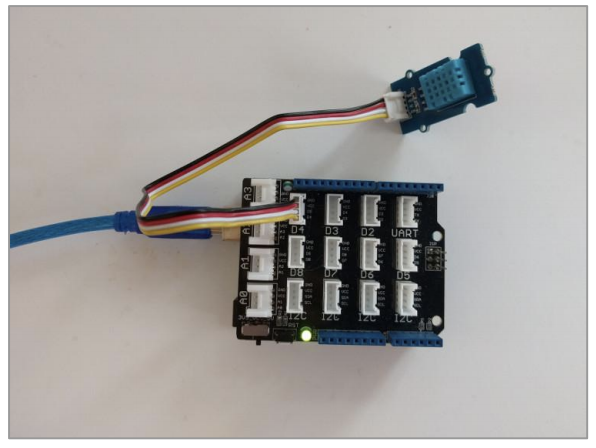Open AIM-For-Thing-Arduino101.ino in the Arduino IDE.
For this tutorial make sure TEMPERATURE is set to ENABLED and all others are set to DISABLED.
Make sure you have your Arduino board connected to your computer.
Click the arrow button in the top left to upload the code.
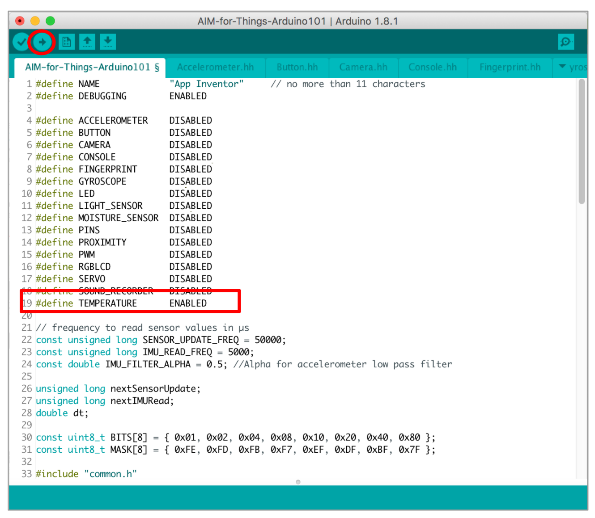Changing Screen1
The remaining steps all build off of the the starter code for Basic Connection tutorial and .aia.
Drag a Label from the User Interface Palette and drop it between LabelStatus and ListBLE
Rename the Label "LabelData".
Change its text to "Data: ".
Add the Arduino101Humidity extension to your app by dragging it onto the Viewer (the Humidity sensor does both humidity and temperature).
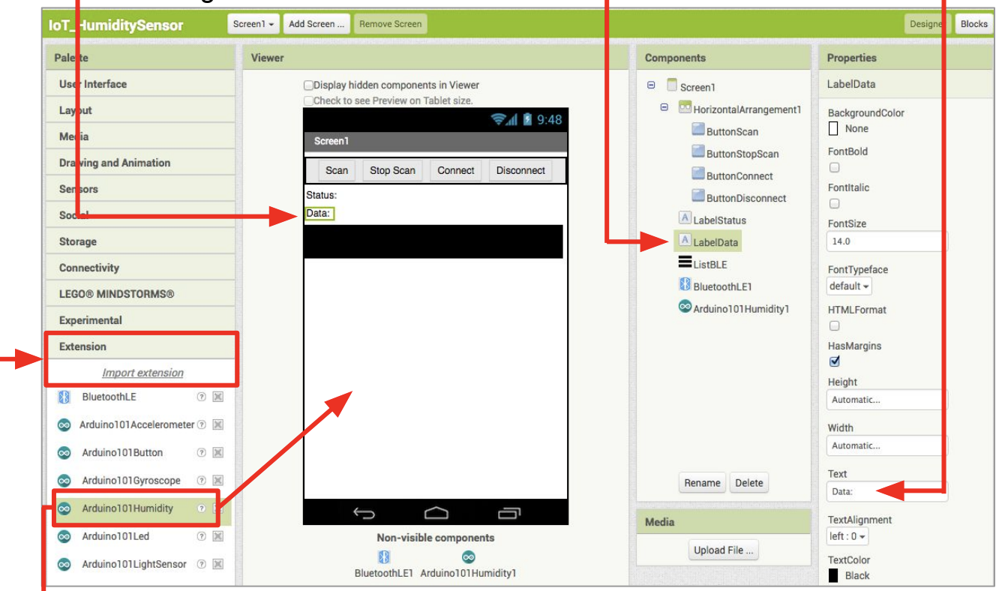Humidity sensor functionality
Next, we need to let App Inventor know which pin on the Grove board the humidity sensor is connected to.
Click on Ardunio101Humidity1 in the Components pane.
In the Properties pane, click on BluetoothDevice and select BluetoothLE1.
Under Pin, enter the digital pin that matches the one the button is plugged into on the Grove board (in this case D4).
Note: You only need to set the number (4) not the letter (D).
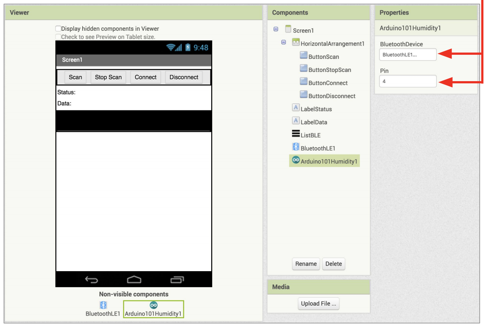Programming the Humidity Sensor
First, we want to request data updates when the sensor value on the Arduino changes.
From Arduino101Humidity1 in the Blocks pane, add call Arduino101Humidity1.RequestHumidityUpdates to the existing when BluetoothLE1.Connected block from the Basic Connection tutorial.

Next, we need to store the data we receive from the sensor. From the Variables drawer in the Blocks pane, drag an initialize global name to block and name it "Humidity". From the Math drawer add a number block and set it to "0". We'll use this to keep track of the sensor value.
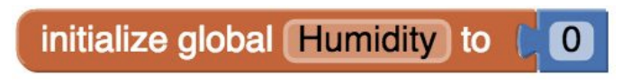Programming the Humidity Sensor
Let's make a new procedure to display the current readings in LabelData when we get new data. You can create a procedure by dragging out a purple procedure block from the Procedures drawer in the Blocks pane. Let's rename it updateDataLabel.
- From LabelData in the Blocks pane, add set LabelData.Text to.
- From the Text drawer connect a join block.
- From the Text drawer, connect a text block and type "Humidity: ".
- From the Variables drawer, connect a get global Humidity block. 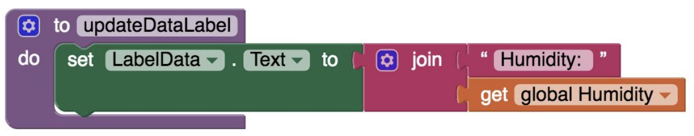
Programming the Humidity Sensor
Finally, we need to call the procedure when this data is received.
- From the Arduino101Humidity1 drawer in the Blocks pane, drag when Ardunio101Humidity1.HumidityReceived.
- From the Variables drawer, add set global Humidity to.
- Hover over the orange "reading" in when Arduino101Humidity1.HumidityReceived to see the get Humidity block. Drag the get Humidity block from this window and snap to set global Humidity.
- From the Procedures drawer, add call updateDataLabel. 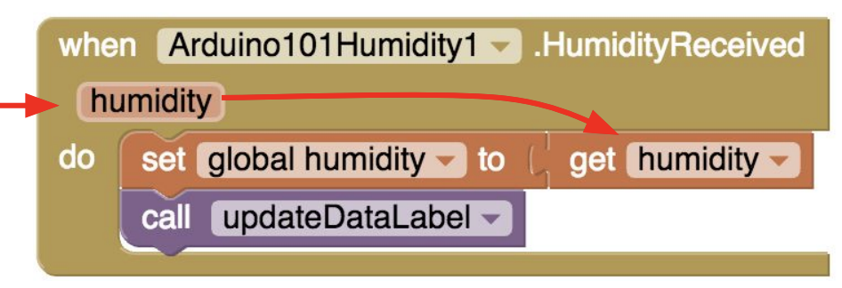
Testing
Your app should now be working! Connect your Android device using the MIT AI2 Companion (if you haven't already). Test it out by closing your hand around the sensor. If it is working, you should see the data label change.
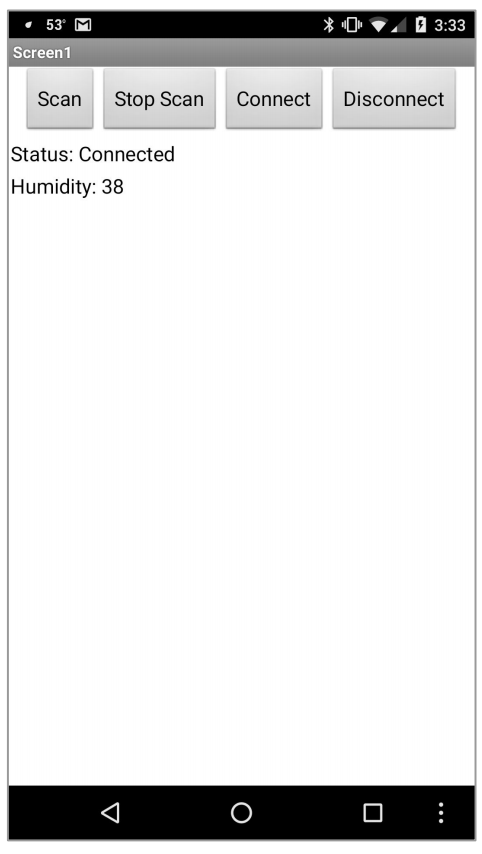IoT: Light Sensor
Introduction
This tutorial will help you get started with App Inventor + IoT and a light sensor on an Arduino 101 controller. We are also using a Seeed Grove shield for this tutorial. You do not need to use this board, but it does make things easier. The light sensor we recommend is the Grove light sensor.
Download the Arduino 101 Extension Bundle and upload it as an extension in your project.
- In the Palette, click on Extension at the bottom and then on "Import extension" and then "Choose File".
- Find the extension on your computer and upload it.
Setup
Connect the light sensor to the Grove board in the D4 pin connector.
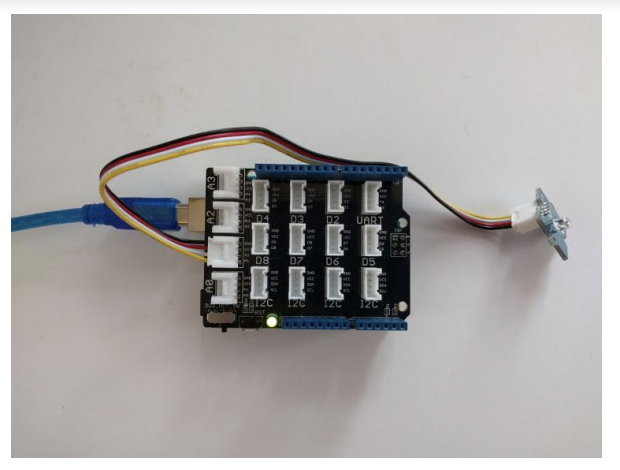Open AIM-For-Thing-Arduino101.ino in the Arduino IDE.
For this tutorial make sure LIGHT_SENSOR is set to ENABLED and all others are set to DISABLED.
Make sure you have your Arduino board connected to your computer.
Click the arrow button in the top left to upload the code.
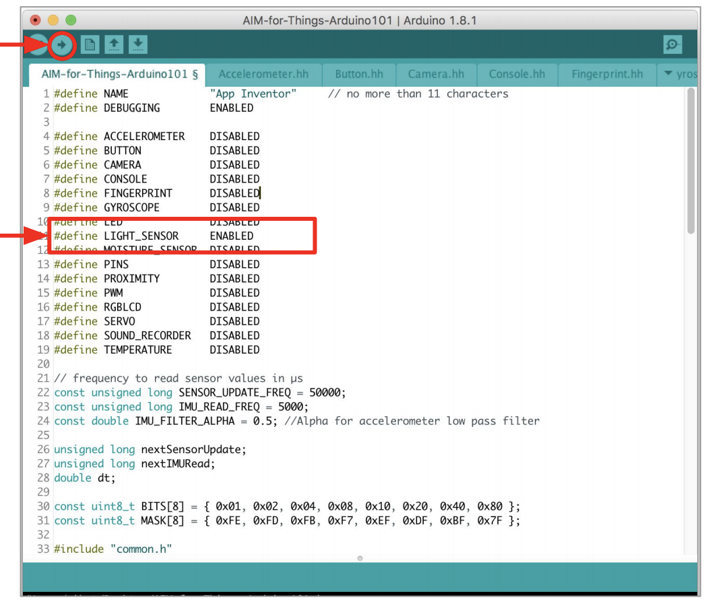Changing Screen1
The remaining steps all build off of the the starter code for Basic Connection tutorial and .aia.
Drag a Label from the User Interface Palette and drop it between LabelStatus and ListBLE
Rename the Label "LabelData".
Change its text to "Data: ".
Add the Arduino101LightSensor extension to your app by dragging it onto the Viewer.
Light sensor functionality
Next, we need to let App Inventor know which pin on the Grove board the light sensor is connected to.
Click on Ardunio101Light1 in the Components pane.
In the Properties pane, click on BluetoothDevice and select BluetoothLE1.
Under Pin, enter the analog pin that matches the one the button is plugged into on the Grove board (in this case A1).
Note: You only need to set the number (1) not the letter (A).
Programming the Light Sensor
First, we want to request data updates when the sensor value on the Arduino changes.
From Arduino101LightSensor1 in the Blocks pane, add call Arduino101LightSensor1.RequestLightUpdates to the existing when BluetoothLE1.Connected block from the Basic Connection tutorial.
Next, we need to store the data we receive from the sensor. From the Variables drawer in the Blocks pane, drag an initialize global name to block and name it "light". From the Math drawer add a number block and set it to "0". We'll use this to keep track of the sensor value.
Programming the Light Sensor
Let's make a new procedure to display the current readings in LabelData when we get new data. You can create a procedure by dragging out a purple procedure block from the Procedures drawer in the Blocks pane. Let's rename it updateDataLabel.
- From LabelData in the Blocks pane, add set LabelData.Text to.
- From the Text drawer connect a join block.
- From the Text drawer, connect a text block and type "Light: ".
- From the Variables drawer, connect a get global light block.
Programming the Light Sensor
Finally, we need to call the procedure when this data is received.
- From the Arduino101LightSensor1 drawer in the Blocks pane, drag when Ardunio101LightSensor1.LightSensorDataReceived.
- From the Variables drawer, add set global light to.
- Hover over the orange "reading" in when Arduino101LightSensor1.LightSensorDataReceived to see the get reading block. Drag the get reading block from this window and snap to set global light.
- From the Procedures drawer, add call updateDataLabel.
Testing
Your app should now be working! Connect your Android device using the MIT AI2 Companion (if you haven't already). Test it out by shining a light at, or covering, the light sensor. If it is working, you should see the data label change.
IoT: Moisture Sensor
Introduction
This tutorial will help you get started with App Inventor + IoT and a Moisture sensor on an Arduino 101 controller. We are also using a Seeed Grove shield for this tutorial. You do not need to use this board, but it does make things easier. The moisture sensor we recommend is the Grove moisture sensor.
Download the Arduino 101 Extension Bundle and upload it as an extension in your project.
- In the Palette, click on Extension at the bottom and then on "Import extension" and then "Choose File".
- Find the extension on your computer and upload it.
Setup
Connect the moisture sensor to the Grove board in the D4 pin connector.
Open AIM-For-Thing-Arduino101.ino in the Arduino IDE.
For this tutorial make sure MOISTURE_SENSOR is set to ENABLED and all others are set to DISABLED.
Make sure you have your Arduino board connected to your computer.
Click the arrow button in the top left to upload the code.
Changing Screen1
The remaining steps all build off of the the starter code for Basic Connection tutorial and .aia.
Drag a Label from the User Interface Palette and drop it between LabelStatus and ListBLE
Rename the Label "LabelData".
Change its text to "Data: ".
Add the Arduino101Moisture extension to your app by dragging it onto the Viewer.

Moisture sensor functionality
Next, we need to let App Inventor know which pin on the Grove board the moisture sensor is connected to.
Click on Ardunio101Moisture1 in the Components pane.
In the Properties pane, click on BluetoothDevice and select BluetoothLE1.
Under Pin, enter the analog pin that matches the one the button is plugged into on the Grove board (in this case A2).
Note: You only need to set the number (2) not the letter (A).
Programming the Moisture Sensor
First, we want to request data updates when the sensor value on the Arduino changes.
From Arduino101Moisture1 in the Blocks pane, add call Arduino101Moisture1.RequestMoistureUpdates to the existing when BluetoothLE1.Connected block from the Basic Connection tutorial.

Next, we need to store the data we receive from the sensor. From the Variables drawer in the Blocks pane, drag an initialize global name to block and name it "moisture". From the Math drawer add a number block and set it to "0". We'll use this to keep track of the sensor value.
Programming the Moisture Sensor
Let's make a new procedure to display the current readings in LabelData when we get new data. You can create a procedure by dragging out a purple procedure block from the Procedures drawer in the Blocks pane. Let's rename it updateDataLabel.
- From LabelData in the Blocks pane, add set LabelData.Text to.
- From the Text drawer connect a join block.
- From the Text drawer, connect a text block and type "Moisture: ".
- From the Variables drawer, connect a get global moisture block.
Programming the Moisture Sensor
Finally, we need to call the procedure when this data is received.
- From the Arduino101Moisture1 drawer in the Blocks pane, drag when Ardunio101Moisture1.MoistureDataReceived.
- From the Variables drawer, add set global moisture to.
- Hover over the orange "reading" in when Arduino101Moisture1.MoistureDataReceived to see the get reading block. Drag the get reading block from this window and snap to set global moisture.
- From the Procedures drawer, add call updateDataLabel.
Testing
Your app should now be working! Connect your Android device using the MIT AI2 Companion (if you haven't already). Test it out by getting the moisture sensor wet (but not up to the wires). If it is working, you should see the data label change.
IoT: Proximity Sensor
Introduction
This tutorial will help you get started with App Inventor + IoT and a proximity sensor on an Arduino 101 controller. We are also using a Seeed Grove shield for this tutorial. You do not need to use this board, but it does make things easier. The proximity sensor we recommend is the Grove Infared Proximity Sensor.
Download the Arduino 101 Extension Bundle and upload it as an extension in your project.
- In the Palette, click on Extension at the bottom and then on "Import extension" and then "Choose File".
- Find the extension on your computer and upload it.
Setup
Connect the proximity sensor to the Grove board in the D4 pin connector.
Open AIM-For-Thing-Arduino101.ino in the Arduino IDE.
For this tutorial make sure PROXIMITY is set to ENABLED and all others are set to DISABLED.
Make sure you have your Arduino board connected to your computer.
Click the arrow button in the top left to upload the code.
Changing Screen1
The remaining steps all build off of the the starter code for Basic Connection tutorial and .aia.
Drag a Label from the User Interface Palette and drop it between LabelStatus and ListBLE
Rename the Label "LabelData".
Change its text to "Data: ".
Add the Arduino101ProximitySensor extension to your app by dragging it onto the Viewer.
Proximity sensor functionality
Next, we need to let App Inventor know which pin on the Grove board the proximity sensor is connected to.
Click on Ardunio101ProximitySensor1 in the Components pane.
In the Properties pane, click on BluetoothDevice and select BluetoothLE1.
Under Pin, enter the analog pin that matches the one the button is plugged into on the Grove board (in this case A0).
Note: You only need to set the number (0) not the letter (A).
Another note: If your sensor wires look like the picture below, note that the yellow wire goes to the A1 pin, not A0 as you would think. Therefore, you should type the number 1 into the Pin property setting, not 0.
Programming the Proximity Sensor
First, we want to request data updates when the sensor value on the Arduino changes.
From Arduino101ProximitySensor1 in the Blocks pane, add call Arduino101ProximitySensor1.RequestProximityUpdates to the existing when BluetoothLE1.Connected block from the Basic Connection tutorial.
Next, we need to store the data we receive from the sensor. From the Variables drawer in the Blocks pane, drag an initialize global name to block and name it "Proximity". From the Math drawer add a number block and set it to "0". We'll use this to keep track of the sensor value.
Programming the Proximity Sensor
Let's make a new procedure to display the current readings in LabelData when we get new data. You can create a procedure by dragging out a purple procedure block from the Procedures drawer in the Blocks pane. Let's rename it updateDataLabel.
- From LabelData in the Blocks pane, add set LabelData.Text to.
- From the Text drawer connect a join block.
- From the Text drawer, connect a text block and type "Distance: ".
- From the Variables drawer, connect a get global Proximity block.
Programming the Proximity Sensor
Finally, we need to call the procedure when this data is received.
- From the Arduino101ProximitySensor1 drawer in the Blocks pane, drag when Ardunio101ProximitySensor1.ProximitySensorDataReceived.
- From the Variables drawer, add set global Proximity to.
- Hover over the orange "proximity" in when Arduino101ProximitySensor1.ProximitySensorDataReceived to see the get reading block. Drag the get reading block from this window and snap to set global Proximity.
- From the Procedures drawer, add call updateDataLabel.
Testing
Your app should now be working! Connect your Android device using the MIT AI2 Companion (if you haven't already). Test it out by moving your hand closer and farther away from the sensor. If it is working, you should see the data label change.
IoT: LCD RGB
Introduction
This tutorial will help you get started with App Inventor + IoT and RGB LCD on an Arduino 101 controller. An RGB LCD is a color liquid crystal display, where text can be displayed. We are also using a Seeed Grove shield for this tutorial. You do not need to use this board, but it does make things easier. The LCD we recommend is the Grove LCD RGB Backlight.
Download the Arduino 101 Extension Bundle and upload it as an extension in your project.
- In the Palette, click on Extension at the bottom and then on "Import extension" and then "Choose File".
- Find the extension on your computer and upload it.
Setup
Connect the LCD RGB to the Grove board in any I2C pin connector.
Open AIM-For-Thing-Arduino101.ino in the Arduino IDE.
For this tutorial make sure RGBLCD is set to ENABLED and all others are set to DISABLED.
Make sure you have your Arduino board connected to your computer.
Click the arrow button in the top left to upload the code.
Changing Screen1
The remaining steps all build off of the the starter code for Basic Connection tutorial and .aia.
Drag a ListPicker, TextBox, and Button from the User Interface Palette and drop them underneath ListBLE
Rename the ListPicker "ListPickerBackgroundColor", the TextBox "TextMessage", and the Button "ButtonMessageSend".
Set the text of ListPicker to "Background Color".
Set the text of Button to "Send Message".
Set the width of Button to "FillParent" and the Hint to "Type message to send".
Add the Arduino101RgbLcd extension to your app by dragging it onto the Viewer.
RGB LCD Sensor functionality
Click on Ardunio101RgbLcd1 in the Components pane.
In the Properties pane, click on BluetoothDevice and select BluetoothLE1.
Unlike many other components, RgbLcd doesn’t need to define a pin in the designer. You just need to plug the RgbLcd component into any of the I2C slots on the Grove.
Programming the RGB LCD Sensor
Next we want to set it up so that we set the text and background color when we first connect to the Arduino.
From Arduino101RgbLcd1 in the Blocks pane, add call Arduino101RgbLcd1.setText to the existing when BluetoothLE1.Connected block from the Basic Connection tutorial.
From the Text drawer, add a text block and type “Connected!”.
From the Arduino101RgbLcd1 drawer, add a call Arduino101RgbLcd1.SetBackgroundColor block.
From the Color drawer, add a color block (we used green below).
From the ListPickerBackgroundColor drawer in the Blocks pane, drag out a set ListPickerBackgroundColor.ElementsFromString block.
From the Text drawer, add a text block and type “red, orange, yellow, green, blue, purple, grey, white”. This will give you the different options for the ListPicker.
Programming the RGB LCD Sensor
Then, we want to update the LCD's text with what the user has typed into the textbox when they click the "Send Message" button.
From the ButtonMessageSend drawer in the Blocks pane, drag out a when ButtonMessageSend.Click block.
From the Arduino101RgbLcd1 drawer add a call Arduino101RgbLcd1.setText block.
From TextMessage in the Blocks Pane, add TextMessage.Text.
From TextMessage in the Blocks Pane, add a set TextMessage.Text to block.
From the Text drawer, add an empty text block. This will clear the TextBox after you send the message.
Programming the RGB LCD Sensor
Finally, we want to be able to change the the background color of the RGB LCD. We’ll use the ListPicker, “Background Color”, to initiate this change.
- From the ListPickerBackgroundColor drawer in the Blocks pane, add when ListPickerBackgroundColor.AfterPicking.
- From the Control drawer, add an if-then block.
- Click on the blue gear icon to get a popup window. Drag 7 else if blocks into the if-then block to make a very large if-then-else-if block.
- Drag a = block from the Logic drawer and connect to the first if block.
- From the ListPickerBackgroundColor drawer, add ListPickerBackgroundColor.Selection and snap into the left side of the = block.
- from the Text drawer, drag a text block, type in “red” and snap that block into the right side of the = block.
- From the Arduino101RgbLcd1 drawer, add call Arduino101RgbLcd1.SetBackgroundColor to the then part of the if block.
- From the Color drawer, add a red block and snap in.
In each of the remaining else if parts of the if-else-if block, repeat what you have done for the color red. Just change the name of the color and the corresponding color block from the Color drawer.
Testing
Your code should look like this:
Your app should now be working! Connect your Android device using the MIT AI2 Companion (if you haven't already) and sending some text or changing the LCD color.
IoT: Temperature Sensor
Introduction
This tutorial will help you get started with App Inventor + IoT and a temperature sensor on an Arduino 101 controller. We are also using a Seeed Grove shield for this tutorial. You do not need to use this board, but it does make things easier. The temperature sensor we recommend is the Grove temperature & humidity sensor.
Download the Arduino 101 Extension Bundle and upload it as an extension in your project.
- In the Palette, click on Extension at the bottom and then on "Import extension" and then "Choose File".
- Find the extension on your computer and upload it.
Setup
Connect the humidity sensor to the Grove board in the D4 pin connector.
Open AIM-For-Thing-Arduino101.ino in the Arduino IDE.
For this tutorial make sure TEMPERATURE is set to ENABLED and all others are set to DISABLED.
Make sure you have your Arduino board connected to your computer.
Click the arrow button in the top left to upload the code.
Changing Screen1
The remaining steps all build off of the the starter code for Basic Connection tutorial and .aia.
Drag a Label from the User Interface Palette and drop it between LabelStatus and ListBLE
Rename the Label "LabelData".
Change its text to "Data: ".
Add the Arduino101Humidity extension to your app by dragging it onto the Viewer (the Humidity sensor does both humidity and temperature).
Temperature sensor functionality
Next, we need to let App Inventor know which pin on the Grove board the humidity sensor is connected to.
Click on Ardunio101Humidity1 in the Components pane.
In the Properties pane, click on BluetoothDevice and select BluetoothLE1.
Under Pin, enter the digital pin that matches the one the button is plugged into on the Grove board (in this case D4).
Note: You only need to set the number (4) not the letter (D).
Programming the Temperature Sensor
First, we want to request data updates when the sensor value on the Arduino changes.
From Arduino101Humidity1 in the Blocks pane, add call Arduino101Humidity1.RequestTemperatureUpdates to the existing when BluetoothLE1.Connected block from the Basic Connection tutorial.
Next, we need to store the data we receive from the sensor. From the Variables drawer in the Blocks pane, drag an initialize global name to block and name it "Temperature". From the Math drawer add a number block and set it to "0". We'll use this to keep track of the sensor value.
Programming the Temperature Sensor
Let's make a new procedure to display the current readings in LabelData when we get new data. You can create a procedure by dragging out a purple procedure block from the Procedures drawer in the Blocks pane. Let's rename it updateDataLabel.
- From LabelData in the Blocks pane, add set LabelData.Text to.
- From the Text drawer connect a join block.
- From the Text drawer, connect a text block and type "Temperature: ".
- From the Variables drawer, connect a get global Temperature block.
Programming the Temperature Sensor
Finally, we need to call the procedure when this data is received.
- From the Arduino101Humidity1 drawer in the Blocks pane, drag when Ardunio101Humidity1.TemperatureReceived.
- From the Variables drawer, add set global Temperature to.
- Hover over the orange "temperature" in when Arduino101Humidity1.TemperatureReceived to see the get temperature block. Drag the get temperature block from this window and snap to set global Temperature.
- From the Procedures drawer, add call updateDataLabel.
Testing
Your app should now be working! Connect your Android device using the MIT AI2 Companion (if you haven't already). Test it out by closing your hand around the sensor or placing it near a lamp. If it is working, you should see the data label change (but probably very slowly).
IoT: Sound Recorder
Introduction
This tutorial will help you get started with App Inventor + IoT and a sound recorder on an Arduino 101 controller. We are also using a Seeed Grove shield for this tutorial. You do not need to use this board, but it does make things easier. The sound recorder we recommend is the Grove Recorder.
Download the Arduino 101 Extension Bundle and upload it as an extension in your project.
- In the Palette, click on Extension at the bottom and then on "Import extension" and then "Choose File".
- Find the extension on your computer and upload it.
Setup
Connect the humidity sensor to the Grove board in the D4 pin connector.
Open AIM-For-Thing-Arduino101.ino in the Arduino IDE.
For this tutorial make sure SOUND_RECORDER is set to ENABLED and all others are set to DISABLED.
Make sure you have your Arduino board connected to your computer.
Click the arrow button in the top left to upload the code.
Changing Screen1
The remaining steps all build off of the the starter code for Basic Connection tutorial and .aia.
Drag a Label from the User Interface Palette and drop it between LabelStatus and ListBLE
Rename the Label "LabelData".
Change its text to "Data: ".
Next, we need to add the buttons to start and stop the sound recording and let us play it back.
- In the Palette window, click on Layout and drag in a HoriztontalArrangement below LabelData in the Viewer.
- In the Properties window set the AlignHorizontal to "Center: 3" and Width to “Fill Parent”.
- From User Interface, drag in three buttons.
- Rename the first "ButtonStartRecording" and set its text to "Start Recording"
- Rename the second "ButtonStopRecording" and set its text to "Stop Recording"
- Rename the third "ButtonPlay" and set its text to "Playback"
Sound Extension
Add the Arduino101SoundRecorder extension to your app by dragging it onto the Viewer.
Next, we need to let App Inventor know which pin on the Grove board the sound recorder is connected to.
Click on Ardunio101SoundRecorder1 in the Components pane.
In the Properties pane, click on BluetoothDevice and select BluetoothLE1.
Under PlayPin, enter the digital pin that matches the one the button is plugged into on the Grove board (in this case D4).
Note: You only need to set the number (4) not the letter (D).
Under RecordPin, enter a number one higher than the PlayPin (5).
Note: There isn't actually another pin you have to plug in, the Grove board deals with this automatically.
Programming the Sound Recorder
First, we want to set it up so the sound recorder begins recording when we press the "Start Recording" button.
From ButtonStartRecording in the Blocks pane, drag in a when ButtonStartRecording.Click block.
From Arduino101SoundRecorder1 in the Blocks pane, drag in a call Arduino101SoundRecorder1.StartRecording block.
From LabelData in the Blocks pane, add set LabelData.Text to.
From the Text drawer, connect a text block and type "Data: Recording".
Programming the Sound Recorder
Next, we want to set it up so the sound recorder stops recording when we press the "Stop Recording" button.
From ButtonStopRecording in the Blocks pane, drag in a when ButtonStopRecording.Click block.
From Arduino101SoundRecorder1 in the Blocks pane, drag in a call Arduino101SoundRecorder1.StopRecording block.
From LabelData in the Blocks pane, add set LabelData.Text to.
From the Text drawer, connect a text block and type "Data: Recorded".
Programming the Sound Recorder
Finally, we want to start play back the sound when we press the "Playback" button.
From ButtonPlay in the Blocks pane, drag in a when ButtonPlay.Click block.
From Arduino101SoundRecorder1 in the Blocks pane, drag in a call Arduino101SoundRecorder1.PlayRecordedSound block.

Testing
Your app should now be working! Connect your Android device using the MIT AI2 Companion (if you haven't already). Test it out by recording your voice or another sound and having the app play it back for you.
IoT: LED
Introduction
This tutorial will help you get started with App Inventor + IoT and an LED (light emitting diode ... basically a small light) attatched to an Arduino 101 controller. We are also using a Seeed Grove shield for this tutorial. You do not need to use this board, but it does make things easier. The LED control we recommend is the Grove White LED (They come in different colors).
Download the Arduino 101 Extension Bundle and upload it as an extension in your project.
- In the Palette, click on Extension at the bottom and then on "Import extension" and then "Choose File".
- Find the extension on your computer and upload it.
Setup
Connect the LED to the Grove board in the D5 pin connector.
Open AIM-For-Thing-Arduino101.ino in the Arduino IDE.
For this tutorial make sure LED is set to ENABLED and all others are set to DISABLED.
Make sure you have your Arduino board connected to your computer.
Click the arrow button in the top left to upload the code.
Changing Screen1
The remaining steps all build off of the the starter code for Basic Connection tutorial and .aia.
Drag a HorizontalArrangement from the Layout Drawer in the Palette window and place it below LabelStatus.
- Drag two Buttons from the User Interface drawer and drag into the HorizontalArrangement.
- Rename the first "ButtonOn" and change its text to "Turn On".
- Rename the second "ButtonOff" and change its text to "Turn Off".
Below the HorizontalArrangement, drag in a Slider from the User Interface drawer of the Palette window.
- Rename the Slider to “SliderIntensity”.
- Set the Slider’s Width to "Fill parent"
- Set its MaxValue to 100 and MinValue to 0
LED Extension
Drag a Label from the User Interface drawer in the Palette window and drop it between SliderIntensity and ListBLE.
- Rename the Label "LabelData".
- Change its Text property to “Data: “.
Add the Arduino101LED extension to your app by dragging it onto the Viewer.
In the Properties tab for the Arduino101LED1
- Set BluetoothDevice to "BluetoothLE1".
- Check that Intensity is set to "100."
- Under Pin, enter the digital pin that matches the one the LED control is plugged into on the Grove board (in this case D5).
- Note: You only need to set the number (4) not the letter (D).
Programming the LED
Now we need turn the LED on and off when we press the buttons.
From ButtonOn in the Blocks pane, drag in a when ButtonOn.Click block.
From Arduino101LED1 in the Blocks pane, drag in a call Arduino101LED1.TurnOn block.
From ButtonOff in the Blocks pane, drag in a when ButtonOff.Click block.
From Arduino101LED1 in the Blocks pane, drag in a call Arduino101LED1.TurnOff block.
Programming the LED
Next we need to store the data we receive from the sensor.
From the Variables drawer in the Blocks pane, drag an initialize global name to block and name it "Intensity".
From the Math drawer add a number block and set it to "0". We'll use this to keep track of the slider setting for the LED brightness (intensity).

Programming the LED
Let's make a new procedure to display the current LED intensity in the LabelData. You can create a procedure by dragging out a purple procedure block from the Procedures drawer in the Blocks pane. Let's rename it updateDataLabel.
- From LabelData in the Blocks pane, add a set LabelData.Text to block.
- From the Text drawer, add a join block.
- From the Text drawer drag out a text block and type in "Intensity: " and snap to the join block.
- From the Variables drawer, drag out a get global Intensity block and snap to the join block.
Programming the LED
Finally, we want to change the brightness of the LED when we move the slider.
- From SliderIntensity in the Blocks pane, add a when SliderIntensity.PositionChanged block.
- From the Variables drawer, add set Arduino101Led1.Intensity to.
- Hover over the orange "thumbPosition" in the when SliderIntensity.PositionChanged block to see the get thumbPosition block. Connect this block to the set Arduino101Led1.Intensity to block.
- From the Variables drawer, drag out a set global Intensity to block.
- Add another get thumbPosition block by hovering over the orange “thumbPosition”.
- From the Procedures drawer, add call updateDataLabel.
Testing
Your app should now be working! Connect your Android device using the MIT AI2 Companion (if you haven't already). Test it out by pressing the "On" and "Off" buttons, and moving the slider left and right. The LED light on your Arduino board should respond.